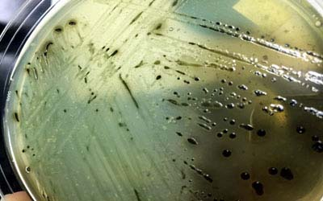
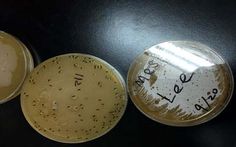

| 傳染病又稱感染症, 由病原性微生物引起, 可由人或其他物種如蚊.鼠等, 透過水.食物.空間.直接接觸.或其他載體散佈而感染. 具傳染性的生物體會尋找及利用宿主體內之資源，利於自身生存，當干擾了宿主正常之生理運作，便可能造成慢性症狀、急性症狀、壞疽、器官及組織被吞噬、 嚴重者甚至死亡. |
| 世紀大流行:傷寒. 鼠疫(黑死病). 天花. 麻疹. 流感(含禽流感等). 霍亂. SARS(嚴重急性呼吸道症候群).安東尼與西普里安大瘟疫~ 未知疾病尤以鼠疫(含禽流感等)最嚴重, 死亡人數累計高達6千萬人, 其次為5千萬人之流感, 其餘皆有百萬至千萬人 |
| 未來可能快速致死疾病: 如伊波拉病毒出血熱,裂谷熱,馬爾堡等具高度傳染性且快速致人於死,抗藥性疾病,能抵抗抗生素之超級細菌每年死亡人數持續成瘟疫 |
| 1. 非典型肺炎: 指由某種未知病原體所引起之肺炎, 非傳統型,如SARS. |
| 目前新冠肺炎則是持續大流行,雖然疫苗可降低感染率,但各國防疫能量不同,使得病毒不斷突變,人類想與病毒共存,但病毒病只想不斷突變消滅人類,從原本全體免疫論點在6-7成,修正至目前9成以上,在某些傳統醫學思維上,經過這次大洗禮,將會有不同見解 |
| 2.禽流感等之流感: 感染力強,傳播速度快,變異頻繁, 常產生新毒株也是近年來防疫重點. |

| 1.呼吸道感染疾病: 包括了肺炎(含SARS等).流感(含禽流感等).支氣管炎,也包含COVID-19新冠肺炎自2020年至2021年12月初已造成526萬人死亡,其數字還在上升中 |
| 2.愛滋病: 逐年成長,至2018年,全世界有4200-5000萬感染者,台灣在2020破4萬名.目前約有4萬感染帶原者.其中男性佔了9成多,服務業第一名,工第二名,學生第三名,歷年死亡近2萬人 |
| 3.腸胃炎: 包括了霍亂.傷寒.痢疾等.以及輪狀病毒、諾瓦克病毒、腺病毒和星狀病毒這類所引發 |
| 4.結核: 如肺結核（Tuberculosis，又稱TB）, 許多結核病原對多種傳統有效藥物已產生多重抵抗力, 即抗藥性,目前疫苗為卡介苗,但卡介苗的免疫作用在大約10年後會逐漸下。 |
| 5.瘧疾類:2015年，全球約有2.14億人新感染瘧疾，並造成多達43.8萬人死亡,大都在非洲 |
| 6.麻疹麻疹是空氣傳播，因此可輕易藉由已感染者的咳嗽和打噴嚏而傳染給他人，具有高傳染能力,麻疹得過後就終生免疫,台灣目前是在嬰幼兒就施打疫苗 |
| 7.百日咳 8.破傷風9.腸膜炎 10. 梅毒 11. B型肝炎 |
| 12.六種熱帶疾病: 包括了登革熱.血吸蟲病.蟠尾絲蟲症等 瘟疫(大流行病) a. 新病原體出現 b. 感染人類且引起嚴重病況 c. 易傳染, 特別是人類之間, 且引響廣大地理區域1.之處。 |

| 由於人類與生活中,指可由動物與人類相互傳染, 或由病媒如蚊.鼠等傳播, 將病原體帶入另一個生物體所引起之傳染病.常見之人畜共通傳染病有:SARS. A型流感. 依波拉病毒出血熱. 狂犬病. 裂谷熱. 馬爾堡病毒. 斑疹傷寒. 萊姆病. 抗藥性金黃色葡萄球菌. 沙門式菌. 炭疽病. 淋巴鼠疫. 包蟲病. 旋毛蟲病..等由上列述統計得知大部份疾病皆為 呼吸道與腸胃疾病, 傳染途徑為飛沫傳染與接觸傳染. |
| 常見病媒動物與其傳播疾病: 傳播病原體之媒介為動物時稱之, 這是許多重大疾病的病原體傳播之媒介.常見病媒動物與傳播之疾病有: |
| 1. 鼠: 鼠疫(黑死病)等. 2. 蚊: 瘧疾.登革熱.黃熱病.犬心絲蟲病等. 3. 蚤蝨: 斑疹傷寒.線鼠疫等. 4. 蜱: 斑點熱等. 5. 恙蟲: 恙蟲病等.6. 蟑螂: 腸胃炎.過敏等. 7. 雞(鳥類): 以禽流感為主等. 8. 牛: 狂牛症等. 9. 狗: 狂犬病等. |